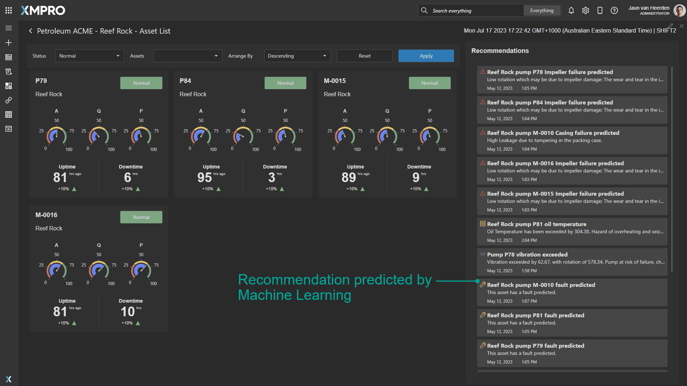
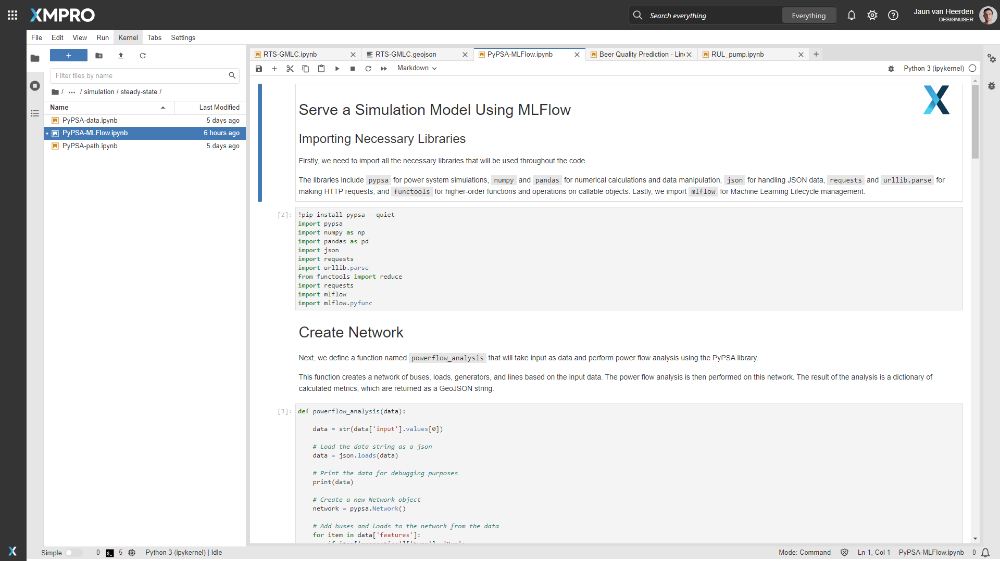

XMPro AI
Unlock a world of possibilities
XMPro AI provides an end-to-end solution to operationalize AI in your existing business processes.
Augment your business processes with XMPro AI to gain a competitive edge through automated decision-making. Easily embed developed AI models into XMPro data streams to analyze vast amounts of data and generate real-time insights, enabling you to make informed decisions quickly.
XMPro AI is baked into our modules, from the agents, reading and contextualizing your sensor data, to the rapid development of AI Models within our XMPro Notebook, and dashboards in our Application Designer - all of which help to make sense of the data and to create intelligent digital twins.
XMPro can be deployed on the cloud, On-Premise, or the edge. With XMPro AI, you can make data-driven decisions with confidence, maximizing efficiency and driving business growth.
Fig 2: XMPro AI - How It Works
Embedded AI
Leverage Machine Learning (ML) to extract actionable insights from vast data volumes, uncover hidden patterns, predict outcomes, and drive business growth and efficiency.
Advanced Analytics and Predictive Insights
Visit our Blueprints, Accelerators, and Patterns repository to see how you can embed AI:
- Remaining Use of Life (RUL) Data Stream, which uses our Python Agent, in the Smart Manufacturing Accelerator.
- The Asset Monitoring - Binary Classification Pattern utilizes our Binary Classification Agent.
- The Liner Wear Prediction - Regression Pattern utilizes our Regression Agent.
- The Vertical Travel - Forecasting Pattern utilizes our Forecasting Agent.

Innovation AI
Utilize XMPro Intelligent Digital Twins and XMPro Notebooks for scalable and cost-effective innovation with AI.
Simulation and Optimization
Conduct simulations, real-time visualizations, explore different configurations, predict outcomes, and identify parameters for improving efficiency, productivity, or energy consumption.

Augmented AI
Interact with systems, applications, and proprietary data using natural language commands, fostering effortless communication, enhanced user experiences, and increased adoption of intelligent automation solutions.
Co-Pilot Capability in App Designer
Build a widget to harness OpenAI from within your Application. Ask for advice from your co-pilot and paste the results into the related recommendation alert.
Note
This example is running on the public version of ChatGPT. Contact us for more information on how to do this using your Azure OpenAI Service, trained on your own IP.
ChatGPT Capability in XMPro Notebook
Ask ChatGPT for help from within XMPro Notebook.
Model Governance Support
As AI scales within the organization, corporate guardrails require AI to be modeled within an MLOps framework.
Our MLflow Agent is the first in a series, that enables effective model governance using a popular MLOps toolset. This empowers data scientists to promote new model versions within MLflow without going back to edit the XMPro Data Stream.
In the example below, version 1 of a model is configured and the Data Stream is published. Observe that the first event printed confirms model version one was used to make a prediction.
We then switch to MLflow to promote version 2 to production. Observe that when we switch back to the Data Stream output, model version two is seamlessly used to make the next prediction.
Fig 7: A new version promoted in MLflow is seamlessly picked up and processed in the Data Stream.
Last modified: November 27, 2025